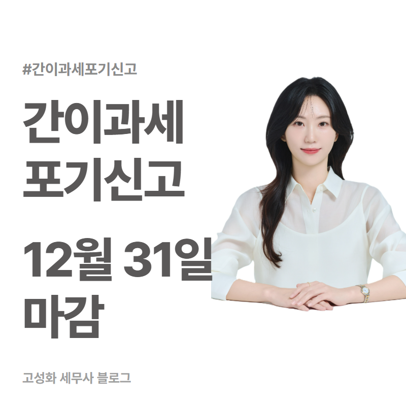
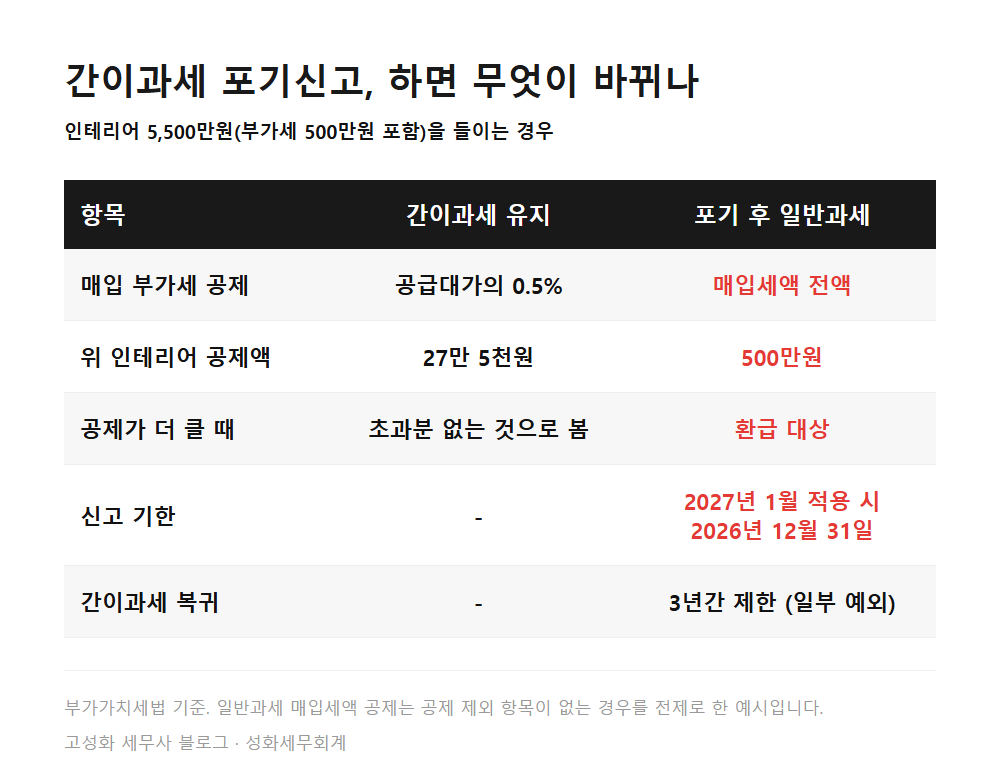

← 세무칼럼 목록
부가세·개인사업자
간이과세 포기신고 12월 31일, 내년 인테리어 앞두고 확인

12월 31일.
내년 1월부터 일반과세자로 바꾸려는 간이과세자가 포기신고를 마쳐야 하는 날입니다.
홈택스에서 간이과세포기신고서를 내면 되고, 적용받으려는 달의 전달 마지막 날이 기한입니다.
내년 초에 매장 인테리어나 설비 구입을 앞둔 분,
이 글에서 다루는 내용
- 간이과세자는 인테리어 부가세를 거의 돌려받지 못합니다
- 12월 31일을 넘기면 1월 매입은 간이과세로 처리됩니다
한눈에 보기

본문 전체와 근거 조문은 블로그에서 확인하실 수 있습니다.